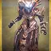
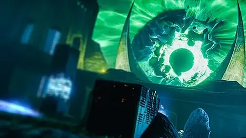
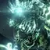
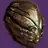

死亡歌者·伊尔·约特
生命值288027
- 距离
- 近至中
- 输出时间
- 45s
- 击杀 DPS
- 356
- 一波 DPS
- 1067



护甲套装：克洛塔记忆；异域武器：坏疽（解密获取，催化剂同为解密获取）；六把传说武器均可获取红框锻造。

造成近战最后一击时：
使目标发生诅咒爆炸，在 4.5 米范围内造成最高 ? [?] 电弧（?）伤害（偃月近战同样可触发）；两次触发间具有 0.5? 秒内置冷却。
在 7 秒内持续造成或承受伤害时：
于 12 秒后获得 1 层人子之力，至多在 24 秒后叠至 2 层。
人子之力按层数提供增益：